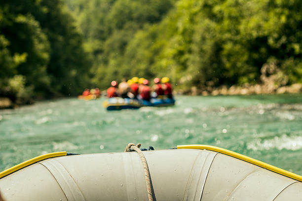

Experience the thrill of a lifetime with White Water Rafting! Dive into heart-pounding whitewater adventures guided by experts for maximum fun and safety. Whether a seasoned rafter or a first-timer, our trips cater to all levels. Immerse yourself in natural wonders and book now for an unforgettable adventure!
Our History: Where Thrills Meet Tradition
In the heart of California's rugged landscapes, White Water Rafting has stood as a bastion of traditional rafting values infused with a spirit of adventure. Our story dates back to the early days of river exploration, where a group of passionate rafters came together to share their love for adrenaline-fueled journeys.

Today, our commitment to preserving the essence of authentic rafting experiences remains steadfast. With a heritage rooted in exploration, conservation, and unmatched excitement, White Water Rafting invites you to embark on a voyage of discovery and create timeless memories on the river.
Adventure Awaits You!
American RiverSacramento RiverKlamath RiverMerced RiverSan Joaquin River